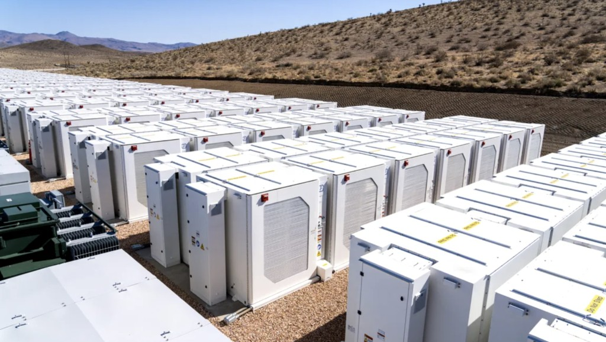
Reglementări & Prețuri energieOtilia Nuțu: România avea nevoie de stocare de cinci ori mai mare ca să evite criza energetică
Otilia Nuțu, membră fondatoare a Expert Forum și analistă de politici publice în energie, a comparat situația…

Reglementări & Prețuri energieOtilia Nuțu, membră fondatoare a Expert Forum și analistă de politici publice în energie, a comparat situația…
Zborurile cu avioane electrice pe distanțe scurte ar putea deveni realitate în Europa la începutul anilor…
Cercetătorii de la Karlsruhe Institute of Technology (KIT) din Germania au reușit să facă o turbină cu…
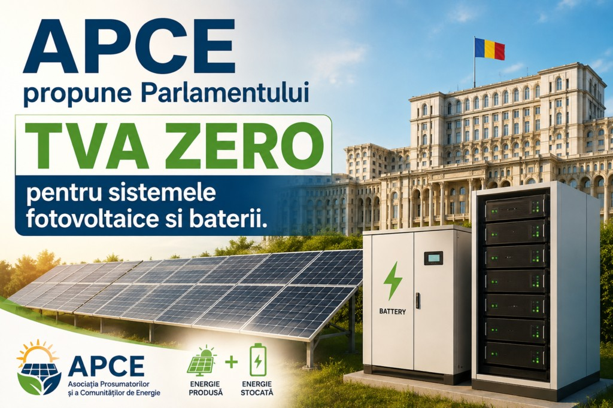
Reglementări & Prețuri energieAsociația Prosumatorilor și Comunităților de Energie (APCE) cere Parlamentului adoptarea urgentă a unui…
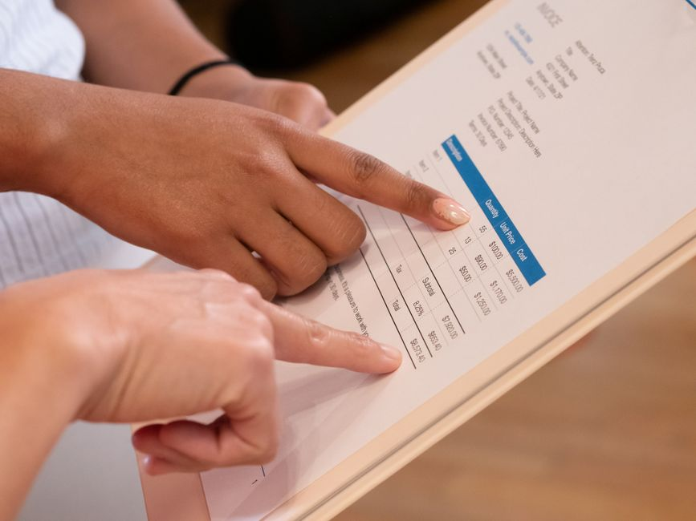
Foto: Kindel Media / Pexels Reglementări & Prețuri energieFactura de energie electrică a unui prosumator arată vizibil diferit față de cea a unui consumator obișnuit,…
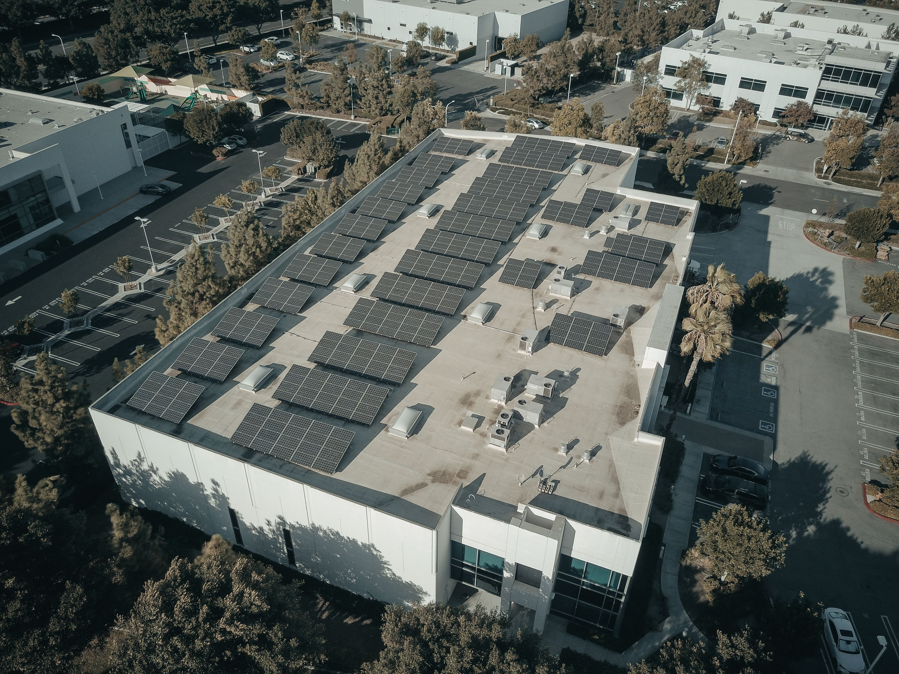
Foto: Kindel Media / Pexels Reglementări & Prețuri energieLegea 160/2026 nu se ocupă doar de prosumatorii casnici mici — introduce explicit reguli și pentru segmentul…
Pentru un prosumator obișnuit, cele două expresii — „compensare cantitativă” și „compensare lunară” — descriu…
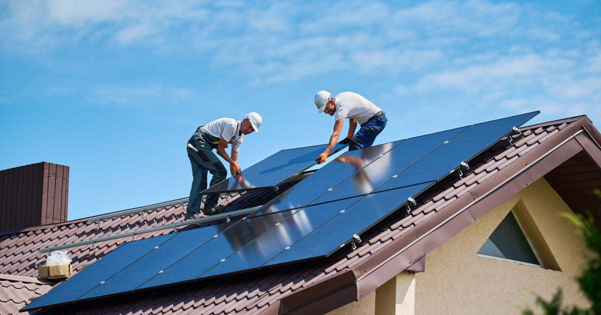
Reglementări & Prețuri energieLegea care schimbă modul în care prosumatorii sunt compensați pentru energia livrată în rețea a fost…
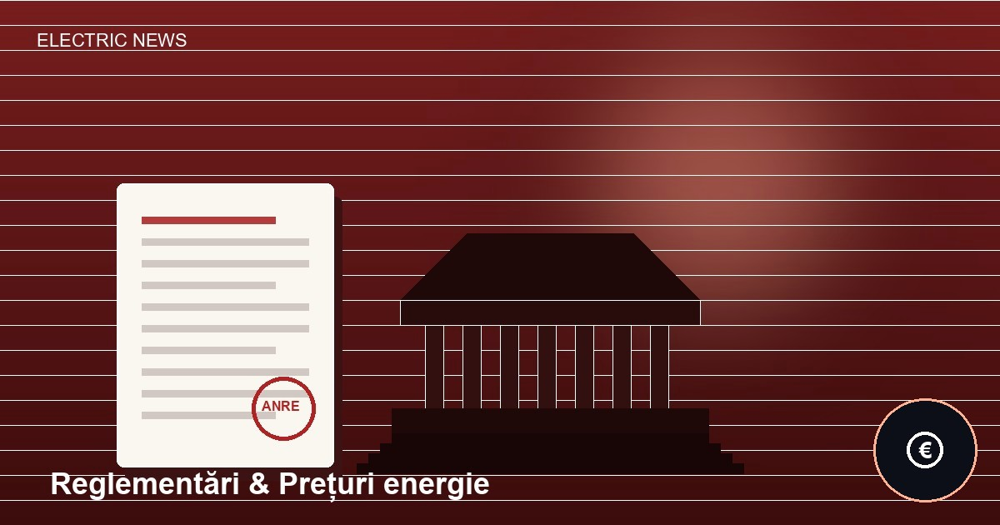
Ilustrație Imagine ilustrativă, generată automat — nu este o fotografie a subiectului. Reglementări & Prețuri energieANRE a stabilit, printr-un comunicat emis pe 6 iulie 2026 de Serviciul relații interinstituționale, nivelul…
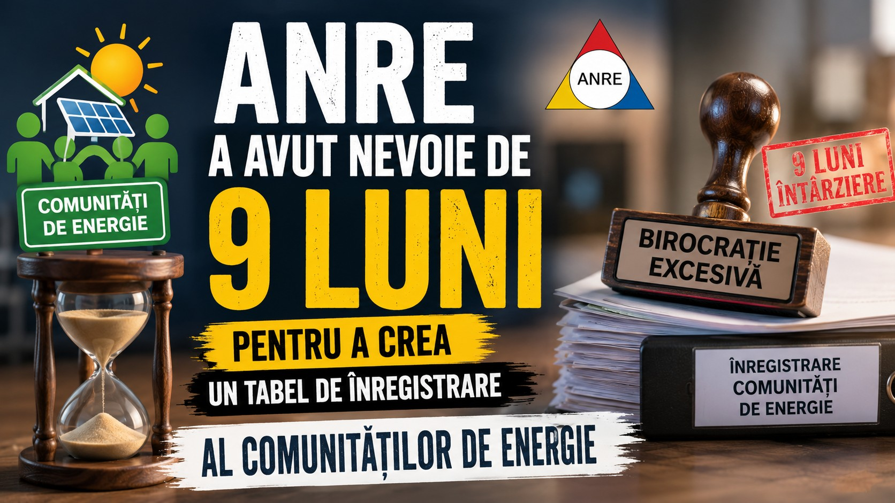
Reglementări & Prețuri energieLegea cerea încă din noiembrie 2025 ca ANRE să publice procedura oficială de înregistrare a comunităților de…
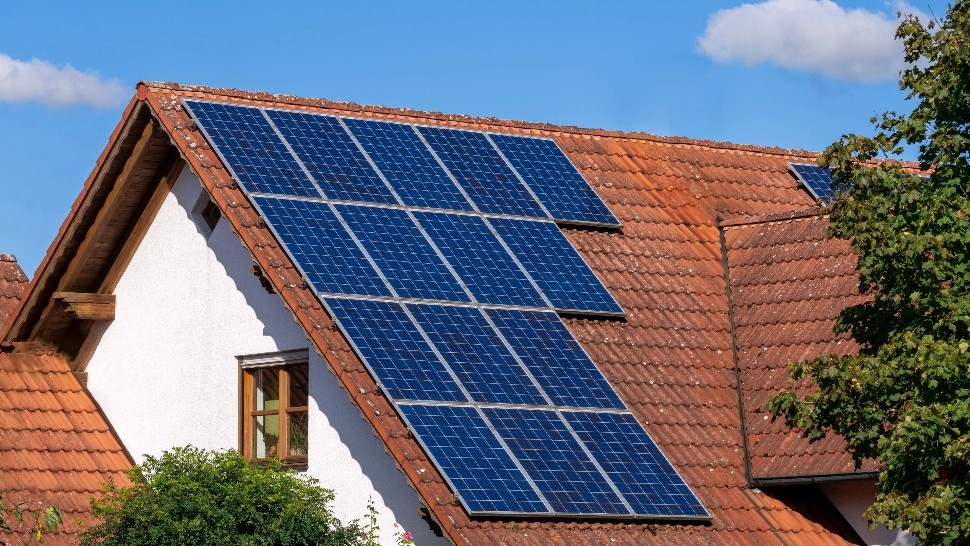
Reglementări & Prețuri energieANRE a aprobat înființarea unui Registru național al comunităților de energie, iar înscrierea în acest…
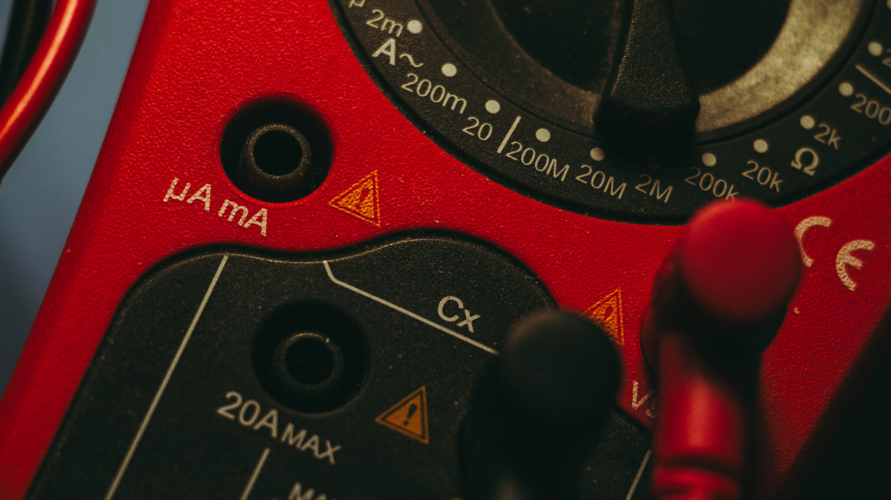
Foto: Matej / Pexels Reglementări & Prețuri energieANRE a publicat pe 30 iunie 2026 un ordin care modifică Regulamentul de Furnizare a Energiei Electrice și…
 Ilustrație
Imagine ilustrativă, generată automat — nu este o fotografie a subiectului.
Reglementări & Prețuri energie
Ilustrație
Imagine ilustrativă, generată automat — nu este o fotografie a subiectului.
Reglementări & Prețuri energie
Autoritatea Națională de Reglementare în domeniul Energiei (ANRE) a retras, printr-o decizie din 3 iunie…
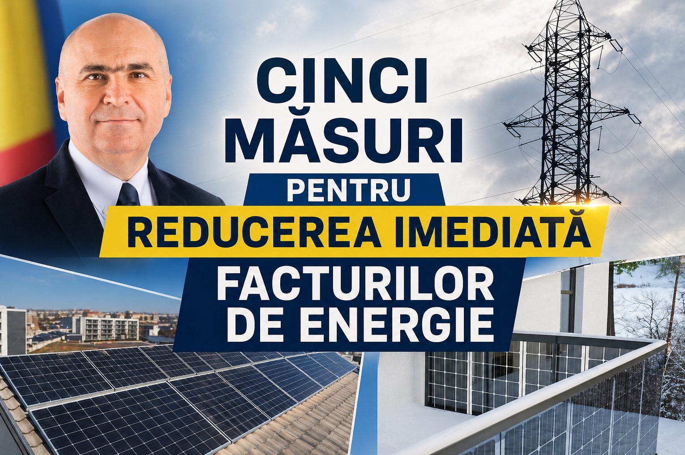
Reglementări & Prețuri energieAsociația Prosumatorilor și Comunităților de Energie (APCE) a publicat un pachet de cinci măsuri concrete pe…
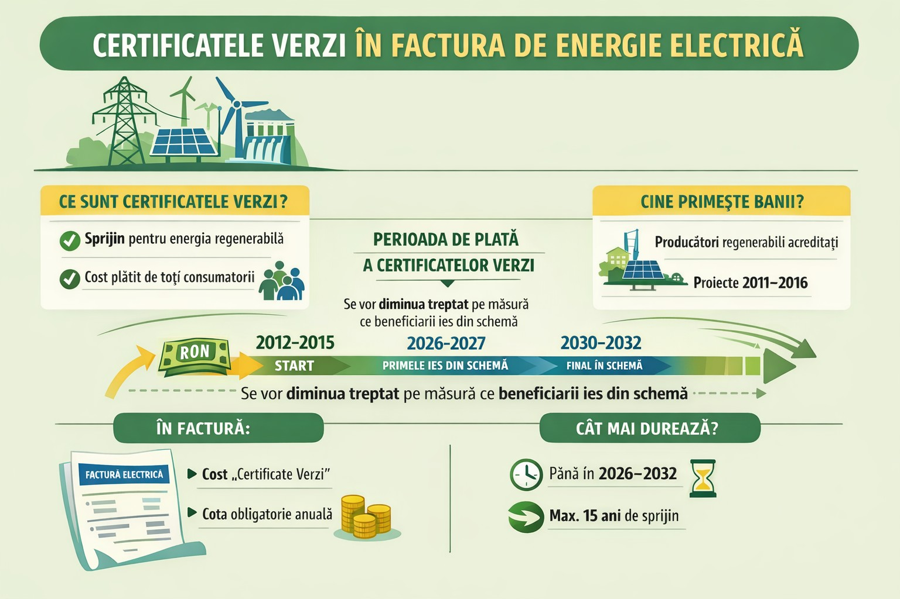
Reglementări & Prețuri energieCertificatele verzi sunt un mecanism de sprijin pentru producătorii de energie regenerabilă — eoliană,…
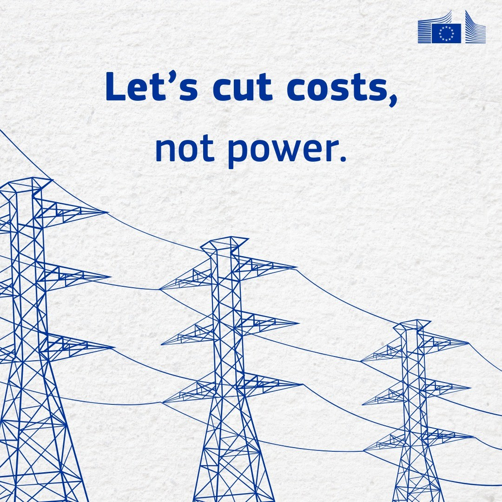
Reglementări & Prețuri energieUn articol de opinie al Asociației Prosumatorilor și Comunităților de Energie susține un argument tăios:…
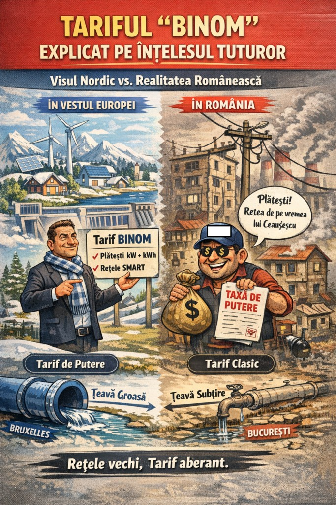
Reglementări & Prețuri energieBINOM e o metodologie nouă de calculare a costurilor de distribuție a energiei electrice, care schimbă…
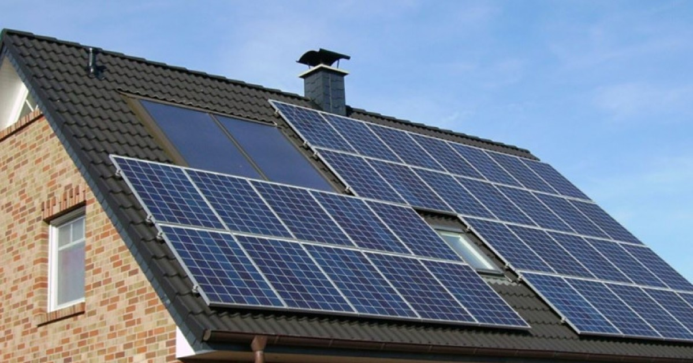
Reglementări & Prețuri energieCompaniile și autoritățile locale din România au acces, începând din 2026, la șase programe de finanțare cu…
Asociația Prosumatorilor și Comunităților de Energie a publicat o matrice cu prețurile orientative practicate…
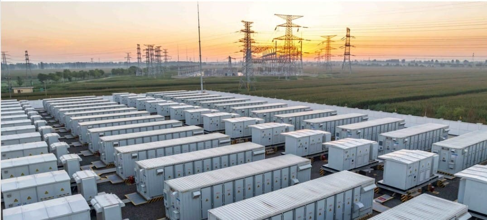
Reglementări & Prețuri energieRomânia ocupă locul 3 în Europa la prețul energiei electrice, potrivit unei analize a Asociației…
O persoană sau o firmă care consumă curent electric, dar produce și ea, de regulă din panouri fotovoltaice — jumătate consumator, jumătate mic producător.
Energia produsă și trimisă în rețea se scade din energia consumată, într-o fereastră de timp stabilită prin lege — surplusul rămas necompensat într-o lună se reportează pentru lunile următoare.
Componentele reglementate din factură (transport, distribuție, certificate verzi) se aplică la energia consumată din rețea, indiferent dacă ești sau nu prosumator — ele finanțează infrastructura comună, nu doar producția.
Autoritatea Națională de Reglementare în Energie — stabilește regulile pieței de energie, aprobă tarifele reglementate și verifică respectarea legii de către furnizori și distribuitori.
Da, schimbarea furnizorului e un drept al consumatorului, gratuit, și se poate face oricând, comparând ofertele disponibile prin platforma oficială a ANRE.
Ești redistribuit automat către furnizorul de ultimă instanță, fără întreruperea alimentării cu curent — apoi poți alege oricând alt furnizor, dacă vrei.
E componenta din factură care acoperă costul transportului energiei prin rețeaua națională de înaltă tensiune, calculată printr-o formulă distinctă de cea a distribuției locale.
ANRE recalculează anual componentele reglementate (transport, certificate verzi) pe baza unor formule legale, în funcție de consum estimat, investiții în rețea și evoluția pieței de energie.
În general da — contorul inteligent (bidirecțional) e cel care măsoară separat energia consumată și cea injectată în rețea, esențial pentru calculul corect al compensării.
Sursa oficială e mereu site-ul ANRE (anre.ro), unde se publică toate comunicatele, ordinele și metodologiile în vigoare — orice altă sursă ar trebui verificată prin comparație cu acesta.